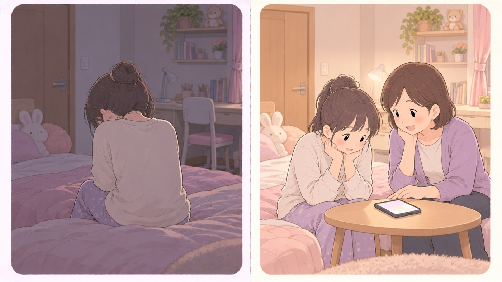

市販薬
市販薬のオーバードーズ
かぜ薬と咳止めが使われる。取り上げる対策では的を外す
厚生労働省は、中高生向けの冊子をつくって注意を促しています。かぜ薬や咳止め薬などを、症状を抑える以外の目的で大量に服用するケースが若者の間に広がっていること、意識を失う、心臓が止まる、呼吸が止まる、場合によっては死に至る急性中毒を起こすこともあることが書かれています。

左は危険な例、右は安全な例です。- すること：どのくらいの子が経験しているかを、数字で知っておく
4万人以上の高校生に行った2021年度の調査で、「治療ではなく乱用目的で市販薬を使用した経験がある」は全体の1.6%（男子1.2%、女子1.7%）。厚生労働省は約60人に1人、2クラスに1人くらいと書いています。縁のない話ではありません。 - すること：相談先を、本人が自分で開ける形で渡しておく
親に言えないから起きていることなので、親を経由しない窓口を先に渡します。上のコールアウトの4つを、本人のスマホに入れておきます。 - しないこと：「隠す・取り上げる」だけで済ませない
厚生労働省は、つらい気持ちを紛らわすための使用という実態を書いています。手段を取り上げても、理由は残ります。 - すること：どの薬が関係するのかを知っておく
厚生労働省はかぜ薬、咳止め薬、鎮痛剤、アレルギー治療薬の中に、依存症の原因となる成分を含んだものがあるとしています。処方薬ではなく、家にある市販薬です。 - しないこと：繰り返しを、意志の問題として扱わない
厚生労働省は、何度も使ううちに効果が出にくくなり、使用量や回数が増え、最終的に薬無しではいられない依存症になってしまうこともあるとしています。繰り返している時点で、相談先に当たります。
「快楽のため」ではない、と国が書いている
厚生労働省の冊子は、青少年がオーバードーズ医薬品を、決められた量を超えて大量に飲むこと。ODとも書かれる。をする理由について、 一般的に考えられがちな「快楽のための使用」というよりも、 つらい気持ちを紛らわすために使用しているという実態があるとしています。 日本でも、経験者は強い孤独感をいだいているケースが多いと書かれています。
だとすると、薬を隠す・取り上げるだけの対策は的を外します。 親ができるのは、話せる状態を保つことと、相談先を先に渡しておくことです。
- 精神保健福祉センター ── つらい気持ちや、やめたくてもやめられないこと
- 各都道府県の薬務課 ── その他、薬物乱用に関する相談
- 厚生労働省「まもろうよ こころ」 ── 電話が難しいときはSNSでも相談できます
- 0120-0-78310（24時間子供SOSダイヤル・文部科学省）
🛍 グッズの選び方
PR- 手段を取り上げても理由は残るので、つらさの側に届くものを用意します。本人が自分で読める本を、手渡さずに本棚に置いておく形が現実的です。
- 本は対象年齢が書かれているものを選びます。親向けの解説書は、本人には読まれません。
- 依存症を意志の弱さとして書いていないものを選びます。「やめられないのは意志が弱いから」と書かれた本は、繰り返している本人を追い込みます。
- 親の側は、かける言葉が具体的に書いてあるものを選びます。知識だけでは、その場で何と言うかが出てきません。
- 世界一やさしい依存症入門 やめられないのは誰かのせい？（松本俊彦・14歳の世渡り術）14歳から。本人が自分で読める形で書かれているAmazonで見る →（新しいタブで開きます）
- 10代からのメンタルケア 「みんなと違う」自分を大切にする方法（本田秀夫・KADOKAWA）本人が読む側。つらさの扱い方を先に知っておけるAmazonで見る →（新しいタブで開きます）
- 依存症がわかる本 防ぐ、回復を促すためにできること（松本俊彦 監修・講談社）親が読む側。図解で、かける言葉まで書いてあるAmazonで見る →（新しいタブで開きます）
リンクはAmazonアソシエイトリンクです。当サイトはアフィリエイトプログラムに参加しています。Amazonのアソシエイトとして、当サイトは適格販売により収入を得ています。 選び方の方針
この項目の根拠
- 薬のオーバードーズって何だろう 〜あなたとあなたの大切な人の命を守るために〜（厚生労働省・中高生向け・PDF）（新しいタブで開きます）
医薬品を決められた量を超えてたくさん飲んでしまうことをオーバードーズ（OD）といい、特に最近、かぜ薬や咳止め薬などを症状を抑える以外の目的で大量に服用するケースが若者の間に広がっていること。意識を失う、心臓が止まる、呼吸が止まる、場合によっては死に至る急性中毒をおこすこともあること。4万人以上の高校生に行った2021年度の調査で「治療ではなく乱用目的で市販薬を使用した経験がある」と答えた生徒は全体の1.6％（男子1.2％、女子1.7％）であり、割合に換算すると約60人に1人、2クラスに1人くらいであること。青少年がオーバードーズをする理由は、一般的に考えられがちな「快楽のための使用」というよりも、つらい気持ちを紛らわすために使用しているという実態があり、日本でもODの経験者は強い孤独感をいだいているケースが多いといわれていること。医薬品を何度も使ううちに効果が出にくくなり、使用量や回数が増え、最終的に薬無しではいられない依存症になってしまうこともあり、かぜ薬や咳止め薬、鎮痛剤、アレルギー治療薬などの中には依存症の原因となる成分を含んだものもあること。相談先として、つらい気持ちややめられないことは精神保健福祉センター、その他薬物乱用に関する相談は各都道府県の薬務課等、厚生労働省「まもろうよ こころ」（SNSでも相談できる）。 - 24時間子供SOSダイヤルなど、子供のSOSの相談窓口（文部科学省）（新しいタブで開きます）
24時間子供SOSダイヤル（0120-0-78310）。